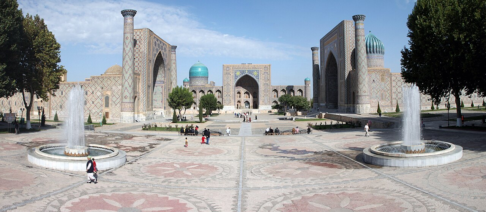

Узбекистан

Узбекистан — Великий шёлковый путь, который работает по сей день и не требует визы. Самарканд: площадь Регистан — три медресе, бирюза куполов, изразцы, в которых узоры повторяются с математической честностью; ночью подсветка делает купола — парящими. Гур-Эмир — мавзолей Тамерлана, купол цвета ночного неба; Улугбек построил здесь обсерваторию, которая считала звёзды лучше большинства в XV веке. Бухара — живой город из глины: минарет Калон, караван-сарай, где теперь чайханы, торговые купола Токи-Заргарон, где продают ножи и шёлк; вечером — чай с лепёшкой, и вы понимаете, зачем людям медресе вместо парков. Хива — музей-крепость целиком: Ичан-Кала и минарет Ислама-Ходжи — самый высокий в Средней Азии. Плов в Ташкенте — центр плова: рис с нутом и морковью соломкой, и деликатность в том, что едят его в полдень, а готовят с рассвета. Мастерские Маргилана, где кокон варят так же, как сотни лет назад. Поезда быстрые: Ташкент—Самарканд — два с небольшим часа.
Что знать перед поездкой
- Регистан — днём и второй раз ночью
- Плов — в центральном ош-марказе Ташкента
- Поезд Ташкент—Самарканд — быстрее машины